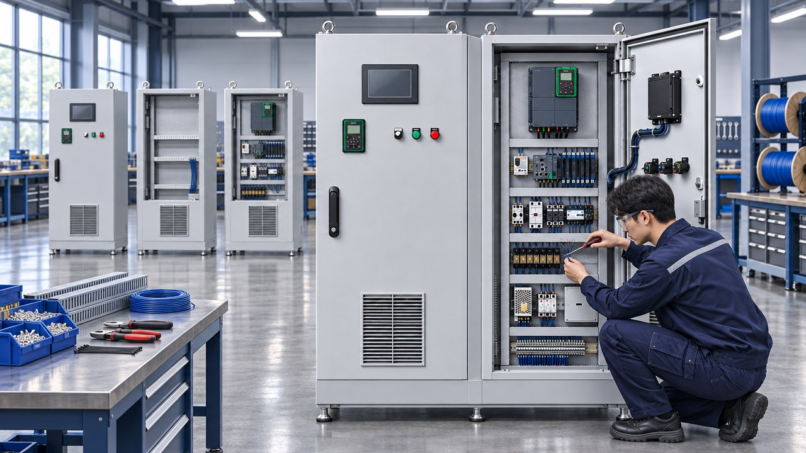
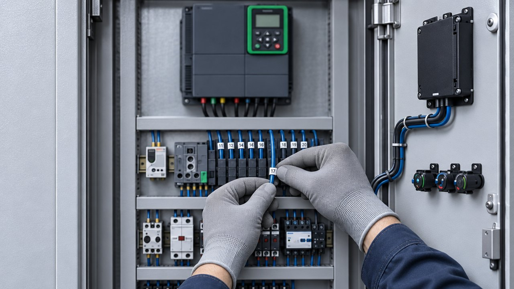
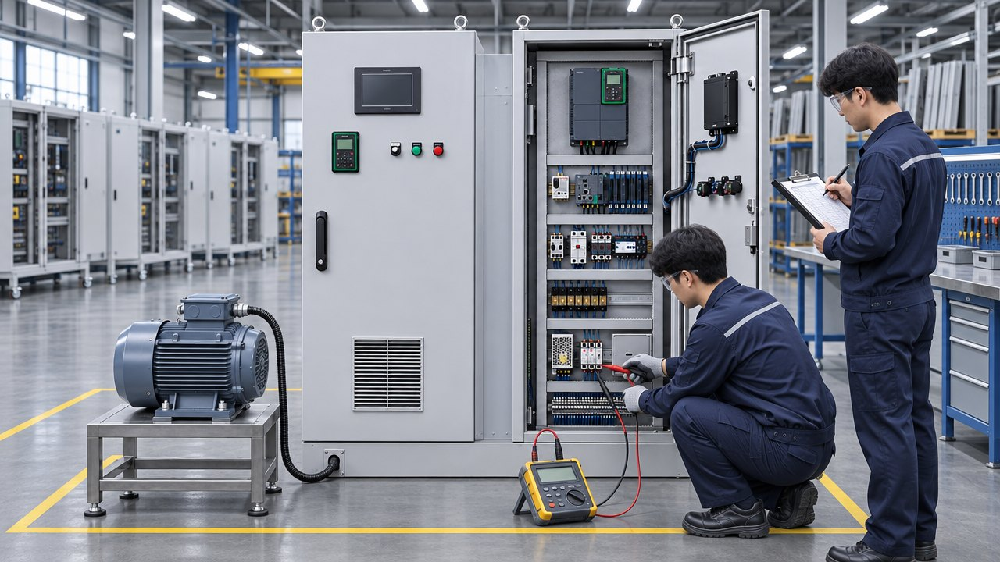

부산의 제어반 제작 기업 (주)동인엔시스는 1991년부터 산업·선박 현장의 제어반을 설계하고 직접 제작해 왔습니다. 양산 1·2공장과 기장공장에서 자동제어반·PLC 제어반·인버터 제어반을 만들고, 출하 전 공장검사와 현장 시운전까지 자체 수행합니다.

고객 사양서나 지정 브랜드가 있으면 그에 맞춰 부품을 구성합니다. CE·UL 기준 설계·제작 체계를 갖추고 있습니다.

대상 설비·용량·설치 환경, 고객 사양서 확인
전기 도면, 부품 목록(BOM), 입출력(I/O) 목록
양산 공장에서 외함 조립·부품 실장·배선
출하 전 13개 항목 시험과 I/O 점별 점검
현장 설치, 시운전, 운영 교육, 사후관리

| 분야 | 발주처 · 현장 | 공급 범위 |
|---|---|---|
| 친환경 선박 | 충남병원선 · 경남청정호 (2023년 취항) | 하이브리드 추진시스템 · 통합제어·감시시스템 |
| LNG 연료가스공급(FGSS) | 삼성중공업 FGSS 시험설비 | G/W(글리콜워터) 히터 제어시스템 |
| LNG 운반선 | SB선보 · LNG 운반선용 BOG 압축기 | BOG 압축기 제어시스템 설계 · 공급 · 시운전 |
| 수소 · 에너지 | SK E&S 액화수소충전소 | VFD · PLC · UPS 제어시스템 공급 |
| 산업 플랜트 | 동화기업 포르말린 수지 플랜트 | 플랜트 전체 제어시스템 설계 · 제작 |
| 산업 플랜트 | KOS · 고려제강(Kiswire) 신선기 · 연선기 · 도금 · 열처리 라인 | 제어시스템 (한국 · 베트남 · 미국 등 7개국) |
| 특수 기계 | 대한화섬 자동 도퍼 | PLC · 서보 8축 · 인버터 2대 · HMI 제어 |
| 선박 제어반 | KSB 선박용 설비 | 제어 콘솔 · 시스템 판넬 |
750건 이상의 프로젝트 중 일부입니다. 전체 실적은 적용 분야 페이지와 회사소개서에서 볼 수 있습니다.
제어반 설계·제작·배선, PLC 프로그램, 공장검사, 현장 시운전을 나누지 않고 한 회사가 책임집니다.
외관·명판, 외함·보호등급, 공간·연면거리, 기계적 동작, 보호기기 설정값, 절연저항, 내전압, 보호접지, 전원·상순, I/O·통신, 인터록·비상정지, 인버터·PLC, 알람·보호을 시험하고, 입출력(I/O)은 점마다 따로 점검한 성적서와 함께 출하합니다.
친환경 선박 하이브리드 추진, LNG 연료가스공급(FGSS), 액화수소충전소, 국내외 생산 플랜트 제어시스템을 설계·제작했습니다.
자동제어반, PLC 제어반, 인버터·모터 제어반, 선박·플랜트용 제어 콘솔과 시스템 판넬, 설비 데이터까지 수집하는 지능형 제어반을 설계·제작합니다.
경상남도 양산시의 양산 1·2공장(2023년 준공)과 부산 기장공장에서 직접 제작합니다. 본사와 기업부설연구소는 부산 부산진구에 있습니다.
공장검사(FAT)에서 외관·명판, 외함·보호등급, 공간·연면거리, 기계적 동작, 보호기기 설정값, 절연저항, 내전압, 보호접지, 전원·상순, I/O·통신, 인터록·비상정지, 인버터·PLC, 알람·보호 등 13개 항목을 시험하고, 입출력(I/O)은 점마다 따로 점검합니다. 결과는 성적서로 남기며, 고객이 입회 검사를 할 수 있습니다.
네. 현장 확인에서 기존 제어반 구성과 운전 방식을 살펴 교체용 제어반을 설계·제작하고, 교체 작업 일정은 생산 계획에 맞춰 협의합니다. 교체하면서 지능형 제어반으로 설비 데이터 수집을 함께 시작할 수도 있습니다.
네. 제어반 제작과 PLC·인버터 프로그램, 공장검사, 현장 시운전을 한 회사에서 수행합니다. 제어반과 프로그램을 출하 전에 함께 시험하므로 현장 시운전 기간을 줄일 수 있습니다.
Schneider Electric 공식 SI 파트너이며 SIEMENS·ABB·Fuji Electric·Phoenix Contact·Danfoss·Eaton 등을 써 왔습니다. 고객 사양서나 지정 브랜드가 있으면 그에 맞춥니다.
제어반 수·용량·사양에 따라 달라집니다. 지능형 제어반 표준 일정에서는 제어반 제작에 5주 안팎이 걸리며, 현장 확인 후 구성안과 함께 견적을 드립니다.
설비와 필요한 제어반을 남겨 주시면 담당 엔지니어가 검토 후 연락드립니다. 도면이나 사양서가 있으면 함께 알려 주십시오.